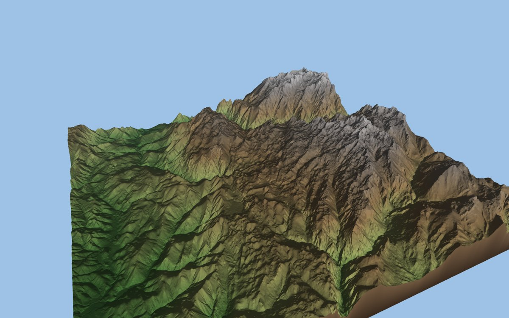
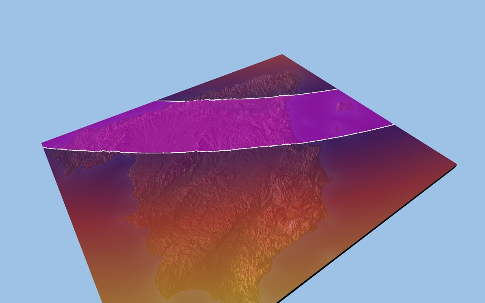
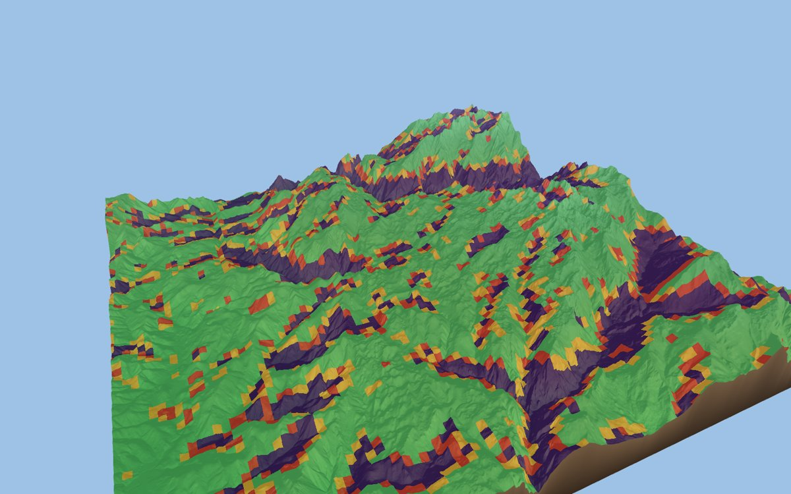
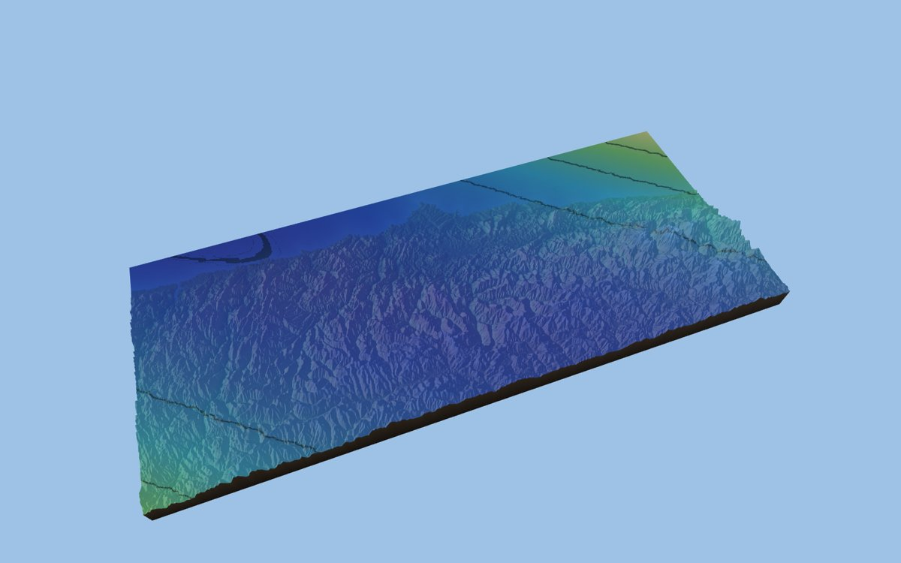
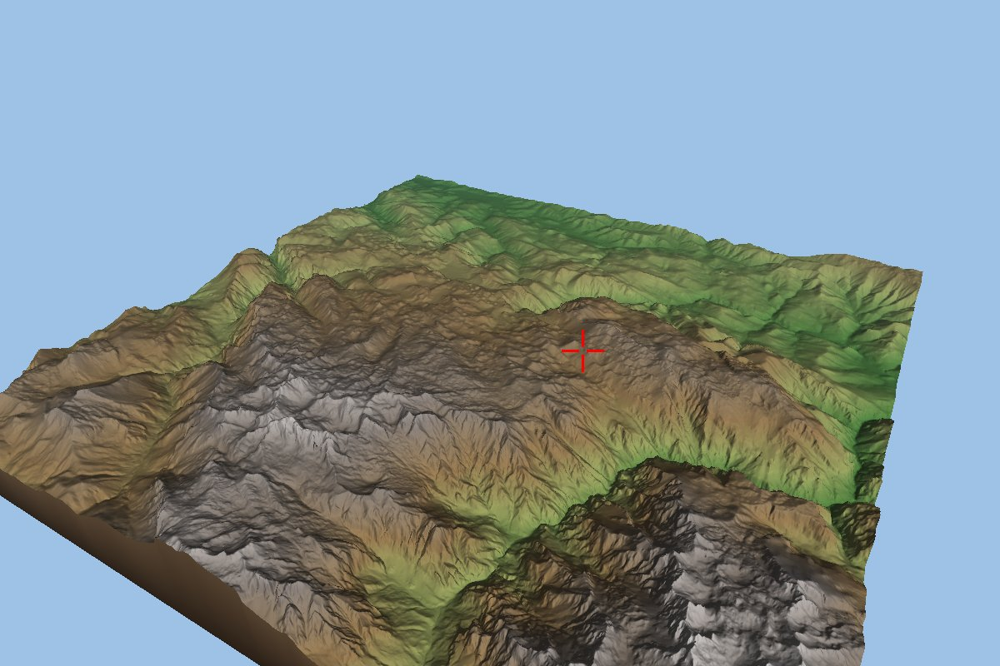

Simulació de l'eclipsi del 12/08/2026 sobre terreny real
Projecte d'Entorns Gràfics (EGRA) · Alícia Martí, Oriol Mota i Elena Gutiérrez · Web de seguiment, versió local 2 (22/10/2026)
Volem veure l'eclipsi total de Sol del 12 d'agost de 2026 sobre el relleu real d'Espanya: explorar el terreny des de fora i, després, situar-nos en un punt concret, a l'altura dels ulls, per veure com la Lluna tapa el Sol i si alguna muntanya l'amaga abans. El programa està fet amb Python i OpenGL a partir de l'estructura dels reptes de classe, amb el relleu de l'IGN i les dades oficials de l'eclipsi del CNIG. La prioritat és entendre el que fem i poder-ho explicar.
Cada subobjectiu té un sol desplegable amb l'explicació. L'estat surt de criteris
comprovables, que són al final de cada apartat:
VALIDAT l'equip ho ha comprovat i entès,
FET comprovat per Claude i pendent de l'equip,
PENDENT encara no fet,
NO COMPLEIX comprovat i lluny de l'objectiu.
El progrés només compta els criteris validats.
Fonts: actes 1 i 3 (PDF), acta 2, el pla de treball i el codi de la
branca reorganitzacio-projecte.
Què hi ha ara i què està planificat
| Funcionalitat | Estat | Observacions |
|---|---|---|
| Terreny 3D de Picos de Europa (5 m, 20 × 20 km) amb les capes del CNIG | ACTUAL | Una sola regió; fora dels 20 km no hi ha relleu. |
| Sol i Lluna que es mouen amb l'hora, i barra de temps | ACTUAL | Model aproximat amb errors coneguts (O1.6, O1.7). |
| Personatge de dues esferes, salts i vista "de joc" | ACTUAL | Es retira a la tasca 3.1 (no és el que volem). |
| Càmera d'exploració lliure i observador a 1,7 m, bloquejat durant la reproducció | PLANIFICAT | Tasques 3.1 i 3.2. |
| Curvatura de la Terra activa en el mode normal | PLANIFICAT | Tasca 3.4 (ara és opcional i està desactivada). |
| Ubicacions catalanes (Vic, l'Escala, Cerdanyola, Montmeló, UAB) | PLANIFICAT | Tasques 0.3, 4.3 i 4.4. |
| Ombres del relleu i condicions meteorològiques | PLANIFICAT | Tasques 6.1 i 6.2. |
| Vista il·lustrativa des de la Lluna; Sol amb textura | PLANIFICAT | Opcional (tasques 7.1–7.3). |
O1 · Simulador de l'eclipsi sobre terreny real
Objectiu 1 de l'acta 3: una simulació interactiva amb dades reals del terreny i de l'eclipsi, que es pugui mirar des de fora i des del terra, amb el Sol i la Lluna al seu lloc, la llum que canvia i el pas del temps.
O1.1 · Dades del terreny Tenir el relleu real de les zones que ens interessen, amb prou detall i de manera que es pugui tornar a descarregar.

Tot el projecte comença amb una dada: l'altura del terra a cada punt. Aquesta dada ve en un model digital del terreny (MDT), una imatge on cada píxel, en lloc d'un color, guarda l'altitud en metres. Perquè sapiguem on és cada píxel, el fitxer porta la seva georeferència: les coordenades de la cantonada i la mida de cada píxel (5 m a Picos).
Aquestes coordenades no són latitud i longitud, sinó metres sobre una projecció, una manera d'aplanar un tros de la Terra. Espanya fa servir la UTM, que divideix el món en franges; la península n'ocupa tres. Per no barrejar-ne, treballem sempre en una sola, la UTM 30N (EPSG:25830).
Descarreguem el MDT del servei web de l'IGN, que retorna qualsevol zona en un sol fitxer. L'script la demana per trossos i els uneix. Demana el format de text ArcGrid perquè el format GeoTIFF del servei arrodoneix les altituds a metres enters i el relleu sortiria esglaonat.
Abans de dibuixar-lo, cal netejar-lo. El mar surt com a "sense dades" o com a 0 m, però també hi ha rius i platges a 0 m que són terra. Per distingir-los, considerem mar només les zones a 0 m que toquen la vora del mapa; els forats que queden dins de terra s'omplen amb la mitjana dels punts del voltant.
Ara el programa carrega una sola zona, Picos de Europa (20 × 20 km), perquè és dins de la franja de totalitat. El següent pas és portar-hi les ubicacions catalanes amb prou terreny al voltant: amb el Sol a 4° sobre l'horitzó, una serra a 30 km pot decidir si es veu o no.
Fitxers: scripts/descarregar_mdt.py (descàrrega),
dades/data_io.py (lectura, neteja i memòria cau),
scripts/preparar_dades.py.
Criteris
- El MDT de Picos (5 m, EPSG:25830) es carrega i es dibuixa (captura sense finestra).
- Cada fitxer de
data/té font, zona, resolució, CRS, llicència, comanda, data i sha256 adata/FONTS.md(tasca 4.1). - Els MDT nous van a una carpeta que el Git ignora; Picos continua versionat (tasca 4.1).
- Zona del Vallès (Cerdanyola, UAB, Montmeló) a 5 m, amb un anell de 25 m al voltant (tasca 4.3).
- Zones de Vic i de l'Escala (tasca 4.4).
Limitacions: el servei de l'IGN només té Espanya (Portugal i França surten a 0 m, com si fossin mar). Els MDT d'Astúries i Luarca encara hi són però es retiraran (tasca 4.2). Els MDT ja pujats al Git es queden a l'historial.
O1.2 · Dades de l'eclipsi (CNIG) Llegir les dades oficials i posar-les sobre el terreny, sense confondre el que llegim amb el que calculem.

El CNIG publica, per a cada punt d'Espanya, les hores de les fases de l'eclipsi: quan la Lluna comença a tocar el Sol (C1), quan el tapa del tot (C2), el màxim, quan el Sol torna a aparèixer (C3) i quan la Lluna se'n separa (C4). Als Picos, per exemple: C1 a les 19:31:39, màxim a les 20:28:02 i C4 a les 21:20:55 (hora d'estiu), amb 100,4 segons de totalitat.
Hi ha dues coses que cal no barrejar. Una és quina part del Sol tapa la Lluna, l'enfosquiment. L'altra és si una muntanya tapa el Sol, l'ocultació pel relleu. El CNIG dona totes dues, però la segona només per al moment del màxim.
Aquestes dades venen en un altre sistema de coordenades (EPSG:3857). Per posar-les sobre el terreny cal reprojectar-les: per a cada píxel del terreny, calcular quin valor li toca. Si el valor és continu, com un percentatge o una hora, s'interpola entre els veïns. Si és una classe, com "el relleu tapa el Sol", s'agafa la del punt més proper, perquè fer la mitjana de dues classes no té sentit.

També importa la posta de Sol. A Catalunya, el Sol es pon abans que acabi l'eclipsi (C4 arriba després de la posta), de manera que el final no es veurà.
Un detall que hem comprovat a la documentació del CNIG: l'elevació del Sol que publiquen inclou la refracció, és a dir, l'efecte de l'atmosfera, que fa que el Sol sembli una mica més alt del que és (veure O1.6).

Fitxers: dades/eclipse_data.py
i data/eclipsi2026/LLEGENDA.md (què és cada banda i classe).
Criteris
- Al punt de Picos (43,262, −4,949) es llegeixen C1 19:31:39, màxim 20:28:02 i C4 21:20:55 CEST, i 100,4 s de totalitat.
- Convencions comprovades al document del CNIG (la banda 1 inclou la refracció).
- Coordenades dels punts concrets (plaça Major de Vic, ajuntament de Cerdanyola, plaça Cívica de la UAB...) verificades amb una font cartogràfica (tasca 0.3).
Limitacions: les hores tenen píxels d'uns 920 m i les ombres, d'uns 230–300 m; les ombres no tenen en compte edificis ni arbres.
O1.3 · Terreny 3D i aspecte visual Dibuixar el relleu a escala real, de manera clara i amb la forma corba de la Terra.
El terreny es dibuixa a partir d'una graella plana que la GPU aixeca fins a l'altura de cada punt (com funciona per dins s'explica a O2.3). Damunt d'aquesta forma, el programa hi decideix el color de cada píxel.
Els colors depenen de l'altitud en metres: verd a baix, marró més amunt, roca i neu a partir dels 3.000 m. Fem servir metres i no "el punt més alt del mapa" perquè la mateixa altitud tingui el mateix color a Picos i a la península.
El mar es pinta més fosc com més lluny és de la costa. Per aconseguir-ho, guardem per a cada punt la distància a la costa, i això també fa que la línia de costa surti suau, sense esglaons. A les quatre vores del mapa hi ha unes parets verticals, les faldilles, perquè el terreny no sembli un llençol penjat, i una boira lleugera que augmenta amb la distància.
Volem que, en el mode normal, el relleu sigui a escala real (sense exagerar-lo) i que la Terra sigui corba. La curvatura fa que un punt a distància d baixi d²/2R, on R és el radi de la Terra: 8 m a 10 km i 196 m a 50 km. Des d'un punt d'observació, això canvia l'horitzó. Ara la curvatura és opcional i està desactivada; activar-la és la tasca 3.4.
Fitxers: basecode/terrain.py,
terrain.vert,
terrain.frag.
Criteris
- El terreny es dibuixa amb colors per altitud, mar, faldilles i boira (captura sense finestra).
- Curvatura activa i relleu a escala real en el mode normal; els controls per canviar-ho, marcats com a eines de depuració (tasca 3.4).
- L'horitzó que es veu coincideix (≤ 0,05°) amb el que calcula un script amb les mateixes convencions (tasca 3.4).
Limitacions: la forma dibuixada fa la mitjana cada ~20 m. Des del centre de Picos, l'horitzó cap al Sol és a 5,8° amb el MDT de 5 m, a 5,6° amb la forma dibuixada i a 2,7° amb el de 200 m.
O1.4 · Exploració de l'escena Moure's lliurement per sobre del terreny per inspeccionar-lo i triar un punt d'observació.
La càmera d'exploració és orbital: gira al voltant d'un punt del terreny, com si aquest punt estigués clavat i la càmera hi donés voltes. Amb el ratolí es gira i es desplaça, i amb la roda s'acosta cap al punt que hi ha sota el cursor. Mai no pot quedar sota terra.
Per saber quin punt del terreny hi ha sota el cursor (quan fem doble clic o zoom), no calculem cap intersecció amb les muntanyes: aprofitem que la GPU ja guarda, per a cada píxel, a quina profunditat és el que s'hi ha dibuixat, i desfem el camí fins al món (O2.2).
Ara mateix, però, la càmera segueix el personatge de dues esferes: el que es mou és el ninot, i la càmera el va darrere. La tasca 3.1 en farà una càmera lliure, sense personatge.
Fitxers: basecode/camera_exploracio.py
i punt_sota_cursor() a main.py.
Criteris
- Gir, desplaçament, zoom i doble clic funcionen amb la finestra (prova de l'equip després de la reorganització).
- La càmera es mou sense personatge i un marcador senzill indica el punt triat (tasca 3.1).
O1.5 · Observació des del terra Mirar el cel des d'un punt concret, a 1,7 m sobre el terra, on el relleu pot tapar el Sol.
Aquesta és la vista que dona sentit al projecte: posar-nos en un lloc, mirar cap al Sol i veure l'eclipsi com el veuria una persona. Per això la càmera ha d'estar als ulls (1,7 m sobre el terreny), es pot girar per mirar al voltant i té un zoom com uns prismàtics, perquè el Sol només fa mig grau.
La idea clau és que la ubicació de l'observador és una dada (latitud, longitud i altitud), separada de qualsevol cosa que es dibuixi. D'aquesta dada surten les dades del CNIG del panell i el model del Sol i la Lluna. Per això, mentre es reprodueix l'eclipsi, la ubicació queda bloquejada: si es pogués canviar, el panell podria mostrar les dades d'un punt i el cel d'un altre.
Ara hi ha una primera persona als ulls del personatge, i la tecla P ja hi posa la càmera mirant el Sol i reprodueix l'eclipsi des de l'inici. Amb la tasca 3.1 deixarà de dependre del personatge, i la 3.2 bloquejarà la ubicació durant la reproducció.
Fitxers: basecode/camera_observador.py
i eclipsi_des_d_aqui() a main.py.
Criteris
- La ubicació de l'observador és una dada separada del dibuix (tasca 3.1).
- Durant la reproducció no es pot canviar el punt, i les coordenades, el CNIG i el model són del mateix punt (tasca 3.2).
Limitacions: fora dels 10 km del centre no hi ha relleu, i per tant l'horitzó llunyà no és real.
O1.6 · El Sol Saber on és el Sol a cada moment i dibuixar-lo al seu lloc del cel.
La posició del Sol al cel es diu amb dos angles: l'azimut, la direcció en què el veiem, comptada en graus des del nord en sentit horari (90° és l'est i 270° l'oest), i l'elevació, quants graus és per sobre de l'horitzó. Els calculem per a cada hora i cada punt amb l'algorisme de la NOAA, i al moment del màxim els corregim perquè coincideixin amb els del CNIG.
Ara sabem que hi ha dos errors, i tots dos tenen una explicació senzilla.
El primer és el nord. L'escena està construïda sobre la quadrícula UTM, i el nord d'aquesta quadrícula no és exactament el nord geogràfic: la diferència creix com més lluny som del centre de la franja UTM. Als Picos és d'1,3°, però a l'Escala és de 4,1°, que són uns vuit diàmetres del Sol. Si no ho corregim, el Sol es pon darrere d'una muntanya que no toca.
El segon és la refracció: la llum del Sol es corba en travessar l'atmosfera i el Sol sembla més alt del que és, uns 0,09° quan és a 10° d'altura i uns 0,57° quan toca l'horitzó. El CNIG ja la inclou. Nosaltres hi sumem una correcció fixa, la del màxim, i per això el nostre Sol va bé al màxim però queda massa baix a prop de la posta.
Per dibuixar-lo, el Sol fa la seva mida aparent real, d'uns 0,53°, i es posa "a l'infinit": a la seva direcció des de la càmera, darrere de tot.
Fitxers: dades/model_eclipsi.py (càlcul),
basecode/sol.py (la llum),
basecode/astres.py (l'esfera visible).
Criteris
- Al màxim, l'elevació i l'azimut coincideixen amb el CNIG als 9 punts provats. És un ajust (el model s'hi corregeix), no una validació.
- Azimut a l'escena: ara està girat d'1,3° (Picos) a 4,1° (l'Escala) per la diferència de nord. Correcció: tasca 3.5.
- Refracció que depèn de l'altura del Sol, en lloc d'una correcció fixa (tasca 3.6).
- Comparació amb la NASA en uns quants punts i moments (tasca 3.8).
- Sol amb textura (enfosquiment de la vora del disc), opcional (tasca 7.1).
O1.7 · La Lluna Fer passar la Lluna per davant del Sol al ritme real de l'eclipsi.
Vist des del terra, l'eclipsi és la Lluna lliscant per davant del disc del Sol. El nostre model en fa una primera aproximació: la Lluna es mou en línia recta i a velocitat constant respecte del Sol, i la seva velocitat i la seva distància mínima al centre del Sol s'ajusten amb les hores del CNIG.
Amb això, l'inici i el final de la totalitat (C2 i C3) surten a menys d'una dècima de segon del CNIG. En canvi, el principi i el final de l'eclipsi (C1 i C4) surten uns 100 segons tard. El motiu és que el model suposa que el màxim és just al mig de l'eclipsi, i no ho és: als Picos, de C1 al màxim hi ha 56 min 23 s, i del màxim a C4, 52 min 53 s. Com que la totalitat dura menys de dos minuts, en aquest interval tan curt la recta sí que és una bona aproximació.
Al dibuix, la Lluna té la seva mida aparent real, però és a una distància artificial (per defecte, el doble de la mida del terreny), perquè la real (364.000 km) no cap a l'escena. Des de l'observador es veu bé; des de qualsevol altre lloc, la geometria seria falsa. Per això una vista des de la Lluna només pot ser il·lustrativa amb aquest model.
Fitxers: dades/model_eclipsi.py,
basecode/astres.py.
Criteris
- C2 i C3 a ≤ 0,1 s del CNIG als punts de totalitat provats (ajust).
- C1 i C4 a ≤ 5 s del CNIG: ara surten de 93 a 105 s tard (tasca 3.7).
- Comparació amb la NASA (tasca 3.8).
- Vista il·lustrativa des de la Lluna, marcada "distàncies no reals" (tasca 7.3).
O1.8 · La llum durant l'eclipsi Que el terreny i el cel s'enfosqueixin segons la part del Sol que queda visible.
La llum directa sobre el terreny es multiplica per la part del Sol que no tapa la Lluna, i el color del cel es fa més fosc amb ella i amb la posta. A la totalitat el cel queda gairebé negre i es dibuixa una corona al voltant del Sol. Aquest cel i la corona són una representació il·lustrativa, no un model físic de l'atmosfera. Falta definir com comprovarem aquesta part.
Fitxers: actualitzar_llum() a main.py,
esfera.frag (halo i corona).
Criteris
- Comprovació de la llum segons la part visible del Sol (criteri per definir).
O1.9 · Ombres del relleu Que les muntanyes facin ombra i puguin tapar el Sol, i comparar-ho amb el CNIG.
Encara no està fet. Volem que el relleu projecti ombres amb la tècnica del shadow mapping (O2.5) i comparar el resultat amb el mapa d'ombres del CNIG.
- Ombres del relleu comparades amb la capa del CNIG (tasca 6.1).
O1.10 · Interfície i barra de temps Controlar el temps de l'eclipsi i consultar les dades del punt.
El panell d'opcions i la barra de temps estan fets amb slimgui, com als reptes. És una interfície "immediata": a cada fotograma es torna a construir sencera a partir de les variables del programa, de manera que no cal guardar-ne cap estat a part. La barra permet reproduir, pausar, avançar o retrocedir 5 minuts i triar la velocitat. Les hores es calculen en temps universal (TU) i es mostren en hora d'estiu (CEST = TU + 2).
Fitxers: ui.py (build_ui, barra_temps).
Criteris
- Panell i barra de temps funcionen amb la finestra (prova de l'equip després de la reorganització).
Limitacions: la font de slimgui no mostra bé els accents, i per això els textos de la interfície van sense accents.
O1.11 · Condicions meteorològiques Poder triar entre dia clar, boira i núvols.
Encara no està fet. La boira per distància que ja té el terreny es podrà aprofitar com a punt de partida.
- Menú de condicions meteorològiques (tasca 6.2).
O1.12 · Validació del model Saber quant s'equivoca el model de l'eclipsi, i per què.
Que el nostre model coincideixi amb el CNIG no demostra gaire si hem fet servir aquestes mateixes dades per construir-lo. Fer un ajust és triar els paràmetres del model perquè reprodueixi unes dades; una comprovació independent el compara amb dades que no hem fet servir. Per això separem tres tipus d'error: respecte de les dades de l'ajust, respecte d'una referència independent i els que venen de les limitacions (resolució del terreny, ubicació de l'observador i atmosfera).
Com a referència independent farem servir el calculador de la NASA per a l'eclipsi de 2026. Abans de comparar-hi res, cal tenir en compte que fa servir convencions diferents de les del CNIG: posa l'observador al nivell del mar, dona l'altura del Sol sense refracció i tracta la vora de la Lluna com un cercle perfecte (sense les seves muntanyes, que canvien els contactes 1–3 segons).
Fitxers i fonts: seccions 6 i 7 del pla; calculador de la NASA ("Eclipse Predictions by Fred Espenak, NASA's GSFC").
Criteris
- Comparació amb el CNIG a 9 punts (C1–C4 i Sol al màxim), amb scripts de prova. Són errors respecte de les dades de l'ajust.
- Font externa triada i convencions documentades.
- Comparació amb la NASA en uns quants punts i moments (tasca 3.8).
- Script de validació dins del repositori (
scripts/validar_model.py, tasca 0.2).
O2 · Conceptes d'informàtica gràfica
Objectiu 2 de l'acta 3: entendre com funcionen les tècniques de l'assignatura aplicant-les al projecte. Referència: Python & OpenGL for Scientific Visualization (N. Rougier), que fa servir altres llibreries però els mateixos conceptes.
O2.1 · Com es dibuixa un fotograma
El camí des de python main.py fins a una imatge a la pantalla.

En executar el programa, el codi de classe obre una finestra i demana a l'ordinador un
context OpenGL, l'espai de treball de la targeta gràfica. Després, el nostre
on_init() hi crea els objectes: el terreny, el Sol, la Lluna...
Cada objecte puja a la targeta gràfica les dades dels seus punts, els vèrtexs, en un VBO (un bloc de memòria de la GPU). Sovint també hi puja una llista que diu quins vèrtexs formen cada triangle, l'IBO, que estalvia repetir vèrtexs. El VAO descriu com s'han de llegir aquestes dades, i el programa són dos petits codis que s'executen a la GPU: el vertex shader, que col·loca cada vèrtex a la pantalla, i el fragment shader, que decideix el color de cada píxel.
A cada fotograma, la càmera calcula les seves matrius i les envia a tots els objectes; cada objecte es dibuixa, i al final la imatge, que s'ha dibuixat amagada, es mostra de cop (el doble buffer).
Cal distingir tres coses. Un vèrtex és un punt de la malla: el terreny en té 1024 × 1024. Un fragment és un candidat a pintar un píxel: la GPU en genera un per cada píxel que cobreix un triangle, amb valors barrejats dels seus tres vèrtexs. Un píxel és una casella de la imatge final, que es queda el fragment més proper a la càmera.
Per comprovar que ho enteníem, vam agafar un vèrtex del terreny, vam fer a mà tots els càlculs de la GPU i vam predir en quin píxel sortiria. La predicció va coincidir amb la imatge (exercici 1.0).
Fitxers: basecode/engine.py (bucle),
main.py, basecode/terrain.py,
scripts/exercici_fotograma.py.
Criteris
- Un vèrtex seguit a mà fins al píxel coincideix amb el que dibuixa la GPU (exercici 1.0).
O2.2 · Càmeres i transformacions Com un punt del món acaba en un lloc concret de la pantalla.
Per passar d'un punt del món (en quilòmetres) a un píxel, el vertex shader el multiplica per tres
matrius, que són una manera compacta d'escriure "mou, gira i escala". La primera,
m_model, col·loca l'objecte al món. La segona, m_view, recol·loca el món
com el veu la càmera: la càmera queda al centre mirant endavant. La tercera, m_proj,
prepara la perspectiva.
Després la GPU divideix pel valor w, que en aquesta projecció és la profunditat del punt segons la direcció en què mira la càmera (no la distància en línia recta). És aquest pas el que fa que el que és lluny es vegi petit. A l'exercici 1.0, en acostar la càmera a la meitat de distància, un punt al costat de la imatge es va allunyar del centre de la pantalla 2,14 vegades.
La càmera també té dos límits, el pla proper (near) i el llunyà (far): només es dibuixa el que queda entre tots dos. Si la relació entre ells és massa gran, la GPU no distingeix bé quina superfície és davant i les llunyanes parpellegen (z-fighting). Per això la càmera els ajusta segons la distància al terreny: el pla proper va de 2 m a Picos a desenes de quilòmetres quan veiem tota la península.
El mateix càlcul, desfet al revés, serveix per saber quin punt del terreny hi ha sota el cursor: es llegeix la profunditat d'aquell píxel i es multiplica per les matrius inverses.
Fitxers: basecode/camera_exploracio.py
(update(), desprojectar()),
basecode/camera_observador.py.
Criteris
- Cada etapa (vista, perspectiva, divisió per w, píxel) es calcula a mà i coincideix (exercici 1.0).
- Amb la càmera a la meitat de distància, el punt s'allunya del centre segons la raó de profunditats (2,14).
O2.3 · Textures i relleu Com una imatge plena d'altures es converteix en muntanyes.
El terreny comença com una graella plana de 1024 × 1024 vèrtexs. Per donar-li relleu, el vertex shader consulta una textura que guarda l'altura del sòl en metres i puja cada vèrtex fins a aquella altura. Una textura no ha de ser una imatge de colors: aquí és una taula de números que la GPU sap llegir molt de pressa.
L'avantatge és que el cost de dibuixar no depèn de la mida del fitxer: el mapa de la península té més de 24 milions d'altures, però sempre es dibuixen els mateixos 1024 × 1024 vèrtexs. A més, per exagerar el relleu només cal canviar un número que s'envia al shader.
Com que hi ha moltes més altures que vèrtexs, cada vèrtex ha de resumir les altures del seu voltant. Per això la textura porta mipmaps, versions cada cop més petites on cada valor és la mitjana de quatre de l'anterior. Als Picos, el vèrtex llegeix una barreja de les versions de 2 × 2 i de 4 × 4. Per això el cim més alt del MDT (2.647 m) no existeix a la superfície dibuixada: n'hi queda la mitjana.
Fitxers: make_texture() a basecode/terrain.py,
terrain.vert.
Criteris
- L'altura reconstruïda a partir dels mipmaps queda a 1,37 cm de la que calcula el vertex shader real (exercici 1.0).
O2.4 · Normals i il·luminació Com es decideix si un vessant és clar o fosc.
Un vessant és més clar com més de cara al Sol està. Per saber-ho cal la seva normal, la direcció perpendicular a la superfície en aquell punt. El model de Lambert diu que la llum que rep és proporcional a l'angle entre la normal i la direcció del Sol: de cara, plena llum; de costat, poca; d'esquena, cap. A això s'hi suma una mica de llum ambient perquè les ombres no surtin negres.
La malla té un vèrtex cada 20 m, però la normal es calcula al fragment shader amb el pendent a 5 m, guardat en una altra textura. Així els vessants mantenen tot el detall del MDT encara que la forma sigui més simple. Falta definir-ne una comprovació.
Fitxers: terrain.frag,
gradient() a dades/data_io.py.
Criteris
- Comprovació de les normals i de la il·luminació (criteri per definir).
O2.5 · Ombres (shadow mapping) Com sap la GPU si un punt queda amagat del Sol.
Encara no està fet. La idea del shadow mapping és dibuixar primer l'escena des del Sol i guardar, per a cada direcció, a quina distància hi ha el primer obstacle; després, en dibuixar des de la càmera, un punt està a l'ombra si és més lluny del Sol que aquell obstacle.
- Shadow mapping al terreny (tasca 6.1).
O2.6 · Organització del codi i del treball Un codi ordenat com el de classe i una feina que es pot seguir al Git.
El programa segueix l'estructura del repte 4. El codi del professor és a basecode/ i no
es toca; els nostres objectes gràfics (terreny, Sol, Lluna, càmeres) s'hi han afegit com a fitxers
nous. El que no fa servir OpenGL (llegir mapes i calcular l'eclipsi) és a dades/, i la
interfície, a ui.py. main.py coordina l'escena.
Una carpeta amb un fitxer __init__.py és un paquet de Python, i se'n poden
importar els fitxers, per exemple from dades import eclipse_data. Les dependències van
en un sol sentit: els gràfics fan servir les dades, però les dades no importen res de gràfics. Per això
les mides aparents del Sol i la Lluna, que fan servir tots dos, es defineixen al model de l'eclipsi.
Al Git, una branca és una línia de treball, un commit és una fotografia del
projecte i una etiqueta és un nom fix enganxat a un commit. Abans de reorganitzar vam guardar
l'estat a l'etiqueta abans-reorganitzacio, i cada pas de la reorganització és un commit
comprovat.
Fitxers: secció 4 del pla (estructura),
CLAUDE.md (manera de treballar).
Criteris
- Estat preservat a la branca
reorganitzacio-projectei l'etiquetaabans-reorganitzacio(tasca 0.1). - Els fitxers originals de
basecode/són idèntics als derepte4/. - Reorganització sense canvis de comportament (fase F2): comprovada amb captures i l'estat del programa, i provada per l'equip amb la finestra.
Limitacions: main.py encara barreja la lògica del personatge,
el temps i la llum; es revisarà en retirar el personatge.